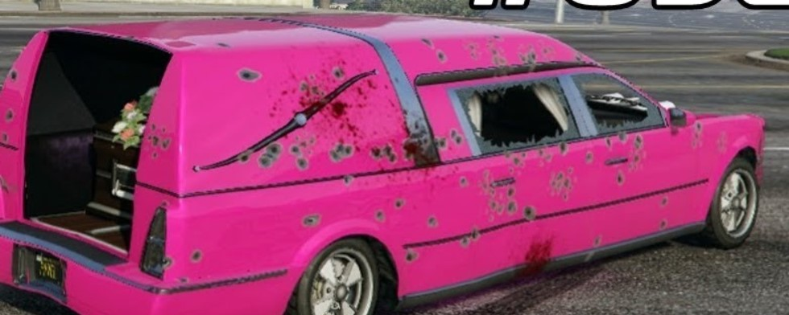

Jak my działamy?

Po ustaleniu daty i godziny odebrania ciała zmarłego, przyjedziemy po ciało pięknym różowym wozem jaki jest na obrazku po lewej. Następnie w umówione miejsce przywozimy ciało zmarłego i za dodatkową opłatą możemy odprawić pogrzeb. W prywatnej wiadomości do nas, może państwo określić jak ma się odbyć pogrzeb, jakie mają być akcesoria, czyli jak ma wyglądać. Możemy też zorganizować posiłek po pogrzebie, aby każdy z gości nie czuł się głodny i mógł zajadać żałobę.